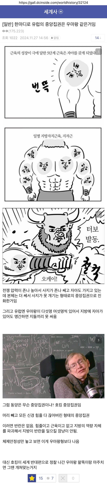
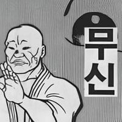

이괄 " 뭐 시발 "
이시애:우리 할배가 느그 태조랑 같이 싸우나도 가고! 밥 묵고! 으이?
탄생의 기원 자체가 자~ 아래로 유턴~
조선 전기에 전방군이 반란 일으킨 거 꼴랑 조사의, 이징옥, 이시애의 난 밖에 없는데
이 중 조사의는 태종이 선반란 때려서 그에 대한 반란이고
이징옥은 수양대군 계유정난에 대한 반란이고
이시애는 지역 토호가 지방군 사령관 죽인 다음 명령권 탈취한 거잖아
별로 변명이 안 되는 거 같은데
3건이면 반란 존나 많은거같은데
정확히 따지면 미리미리 밟아두고 회유하던 여진족이 임진왜란 사이에 통일되버리고
임진왜란으로 초토화된 조선은 거기에 대응할 대규모 상비군을 운용할 여력이 날아가버림
명분이 있어도 군사없었으면 난도 없었겠지
'내가 쿠데타로 왕이됐으니까 저새끼도 쿠데타할지몰라'
물론 칭기스칸이 나오면 뭐
")
")

결국 유럽에게 개처럼 처맞은 결말은 똑같네
비유ㅅㅂㅋㅋㅋㅋ
그래도 호킹진화형은 프로페서X되는거 아님?
?? 아니 그럼 우리애가 대머리가 된단 말이에욧?!!
일본도 우마왕 스타일이긴 했지...
너무하네 ㅋㅋㅋㅋㅋㅋㅋ
스타에도 초기 지구정부가 호킹식 중앙집권을 했다가 태양계 정찰나온 저그의 지방자치팔뚝한테 영혼까지 털리는 비공식 스토리가 있다
흠 하지만 인류 팔뚝이 토스 저그 뚝배기 다 깨는 게임 인플레이 설정은...!
팔뚝도 아니고 손가락 수준 아니냐
이게 다 마인 세개 사면 벌쳐 하나 주는 3+1 때문이다..!
막상 유럽권 중앙집권화 한 국가들 보면
수도가 지방을 줘패서 빈사상태 만들어서 중앙집권화 성공함
하긴 프랑스도 파리가 다른지역 다 죽이고 혼자 살아남은거긴 하네
독일 러시아도 비슷하고
서양은 왕은 귀족들의 대표같은 느낌인데
동양은 왕 미만 잡처럼 느껴지긴함 ㅋㅋ
동양의 왕은 사실상 한 나라의 신이지
서양의 왕은 거대한 조직의 리더같은 느낌이고
그래서 왕겜에서 왕이 그런느낌이었던가?
유럽에서도 프랑스는 굳이 따지면 동양식 스탈일텐데 그냥 중앙인 일드프랑스 체급 자체가 넘사벽. 역시 유럽짱ㅇ...
17세기부터 중앙집권에 꼬라박아서 결국 해냄
나라가 크다보면 난도 일으키고 그러면서 자라는거지
약간 설명이랑 다른게 군권의 중심이 다른것도 설명해야 함
중국만 해도 역사속의 지방관과 지방관의 군권은 계속해서 달라졌었지
이 변화상만 설명해도 중국역사 수천년 다 다뤄야겠지
동양이라고 해봤자 결국 중국 한국 이야기인데 국경 밖에 경쟁자가 될 제국이 없었음
그냥 유목민 오랑캐나 좀 있었지
중국의 경쟁자 후보로 고구려가 있었는데 이악물고 때려서 결국 멸망시킨다음 만주를 공백지로 두면 군사력이 크게 필요없는 상태가 됨
동양중에서도 중동, 인도, 인도차이나, 극동이 다 다른편인데 지금 여기서 서술하는건 현대 중동 왕국들의 형태와 유사한편임
그러니 사우디같은 부자나라가 후티한테 개털리지
갑자기 든 생각인데 우리 문제가 발생하면 그냥 없애버리잖아? 이게 이런 중앙집권전통의 결과 아닌가? 과거에 지방에서 지랄나면 그냥 없애버린방식었다는거아니야??
이거 대표적인 우리역사 사례가 바로 조선 태종의 사병철폐임. 고려 > 조선처럼 신라가 막판에 개판됐을 때 나라가 통채로 갈아엎어지지 않고 후삼국으로 쪼개인 이유도 바로 이것. 고려가 통일되기 전에 딱 후삼국 3개만 있었던게 아니라 이건 그냥 말 그대로 탑3였고 지방호족들이 어디에 붙을지 눈치게임하던 시절이었음.
교과서에서 이제 절대왕정 명칭 재정,군사국가로 변경됨.
중앙집권으로 나아갔지만 그렇게 해도 절대까진 아니고 동양의 왕권보단 약해서 명칭이 변한걸로 앎
호킹 사진 보자마자 개빠겠다 ㅋㅋㅋㅋㅋ
동양이 너무 한국기준 아니냐?그리고 한국도 호족 제대로 족치고 중앙집권 이룬게 조선 태종때 아니냐?
쇄~국(신미양요로 털리는 톤으로)
비유가 존나 적절하네.
조선도 처음에 무기개발하고 전방에 군사력 배치하니까 난 일어나서 사지 절단함